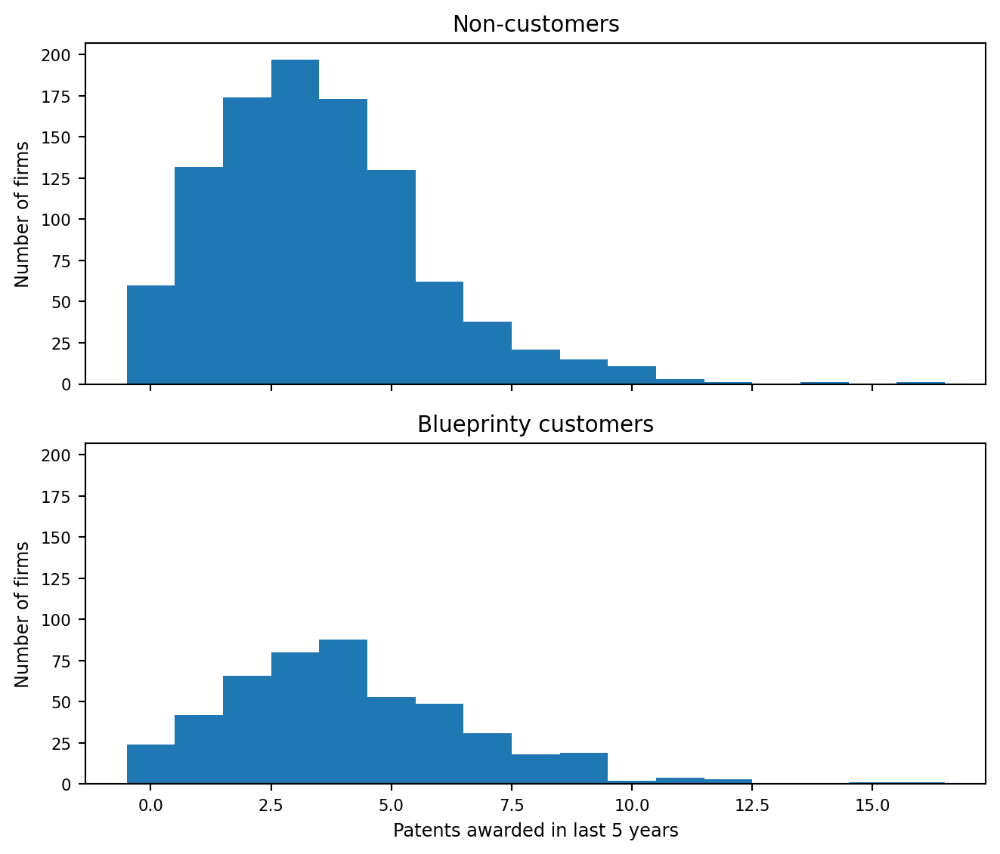
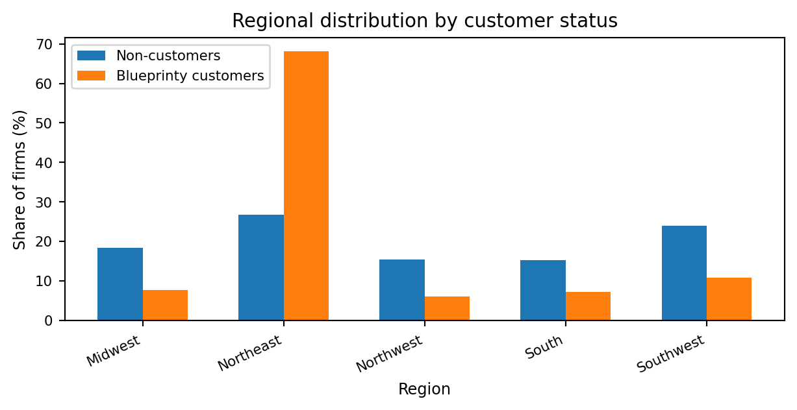
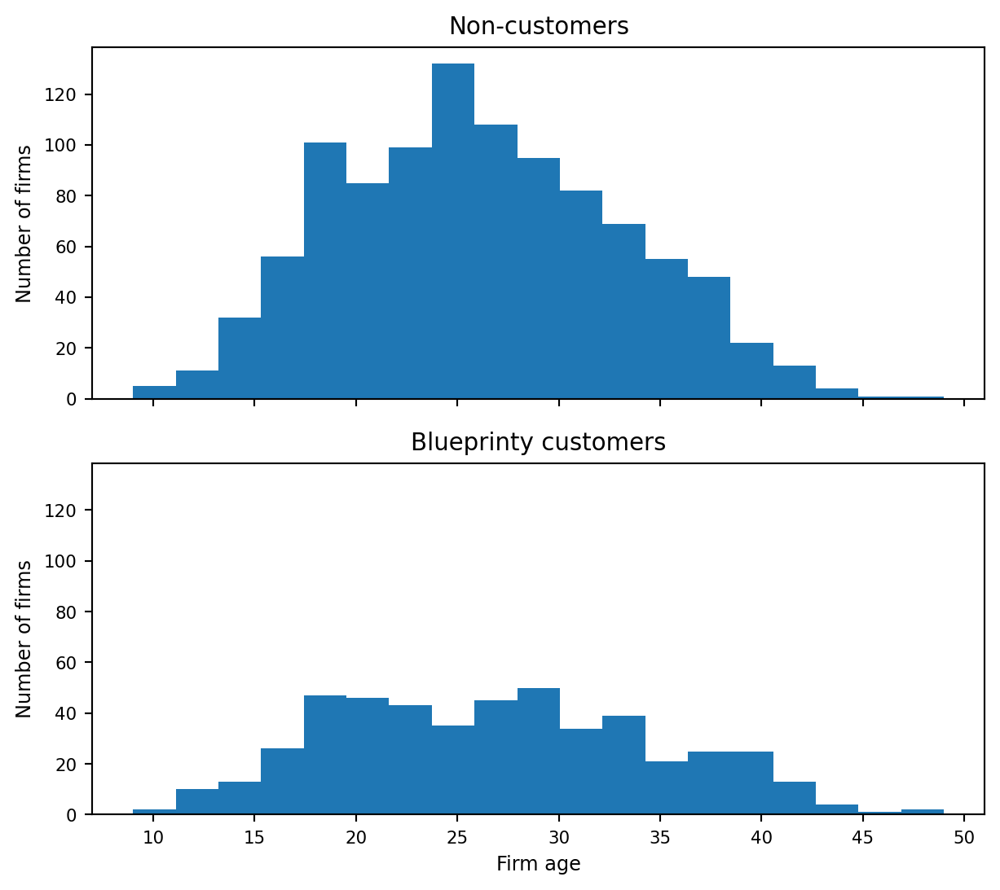

Poisson Regression and Maximum Likelihood Estimation
A Case Study of Blueprinty’s Software and Patent Awards
Author
He Zou
Published
May 15, 2026
Introduction
Blueprinty is a small software company that builds tools for engineering firms preparing blueprints for patent applications. Because patent applications often require detailed technical documentation, Blueprinty’s software is designed to make the application process more organized, consistent, and effective. The company’s marketing team would like to make a strong claim: firms that use Blueprinty’s software are more successful in getting patents approved.
At first glance, this question sounds simple. We might compare the number of patents awarded to Blueprinty customers with the number awarded to non-customers. If customers receive more patents, that could look like evidence that the software helps. However, this comparison is not enough on its own. The ideal data would track the same firms before and after they began using Blueprinty’s software, allowing us to see whether their patent success improved after adoption. Unfortunately, that kind of before-and-after data is not available.
Instead, Blueprinty has collected data on 1,500 mature engineering firms. For each firm, the dataset records the number of patents awarded over the past five years, the firm’s regional location, its age since incorporation, and whether or not it uses Blueprinty’s software. These data allow us to compare customers and non-customers, but they also require some caution.
The main challenge is that Blueprinty’s customers were not randomly selected. Firms that choose to use Blueprinty’s software may differ systematically from firms that do not. For example, customers may be older, more established, located in regions with stronger engineering ecosystems, or more experienced with the patent process. Any raw difference in patent counts could therefore reflect these firm characteristics rather than the effect of the software itself.
In this post, I use Poisson regression and maximum likelihood estimation to study whether Blueprinty customers tend to receive more patents, while accounting for observable differences such as firm age and region. The goal is not only to estimate the relationship between Blueprinty usage and patent awards, but also to show how maximum likelihood estimation works in a practical marketing analytics setting.
Exploring the Data
Before estimating a Poisson regression model, I first explore the raw patterns in the data. The outcome variable is patents, which records the number of patents awarded to each firm over the past five years. The main explanatory variable is iscustomer, which indicates whether the firm uses Blueprinty’s software. The dataset also includes each firm’s region and age, which may also be related to patent outcomes.
shape: (5, 5)
patents
region
age
iscustomer
customer_status
i64
str
f64
i64
str
0
"Midwest"
32.5
0
"Non-customers"
3
"Southwest"
37.5
0
"Non-customers"
4
"Northwest"
27.0
1
"Blueprinty customers"
3
"Northeast"
24.5
0
"Non-customers"
3
"Southwest"
37.0
0
"Non-customers"
The dataset contains information on engineering firms and their patent outcomes. The outcome variable, patents, records the number of patents awarded to each firm over the past five years. The variable iscustomer indicates whether the firm uses Blueprinty’s software, with 1 representing Blueprinty customers and 0 representing non-customers. The dataset also includes each firm’s region and age, which may be important because patenting activity could vary across geographic regions and across firms at different stages of maturity.
Before estimating a Poisson regression model, I first explore how patent outcomes differ between Blueprinty customers and non-customers. I also compare the two groups by region and firm age, because these factors could confound the relationship between software usage and patent approvals.
Patent awards by customer status
A natural starting point is to compare the average number of patents awarded to Blueprinty customers and non-customers.
Customer status
Number of firms
Mean patents
Blueprinty customers
481
4.13
Non-customers
1019
3.47
Blueprinty customers received an average of 4.13 patents over the past five years, compared with 3.47 patents for non-customers. This raw difference is consistent with Blueprinty’s claim that its software is associated with better patent outcomes. However, this comparison is only descriptive. Customers may differ from non-customers in other ways, so the difference should not be interpreted as causal evidence.
Distribution of patent awards
The average patent count is helpful, but it does not show the full distribution of patent outcomes. To better understand the data, I next compare the full distribution of patent counts for Blueprinty customers and non-customers.

Distribution of patent awards by Blueprinty customer status.
Both distributions are right-skewed count distributions, with most firms receiving a relatively small number of patents. The customer distribution appears slightly shifted toward higher patent counts, but there is still substantial overlap between customers and non-customers. This supports using a count-data model, while also showing that customer status alone does not explain all variation in patent outcomes.
Regional differences by customer status
One possible concern is that Blueprinty customers may not be geographically comparable to non-customers. If customers are concentrated in regions where firms tend to receive more patents, then the raw customer advantage could partly reflect regional differences rather than the effect of Blueprinty’s software.

Regional distribution by Blueprinty customer status.
Blueprinty customers are much more concentrated in the Northeast than non-customers. This suggests that region is a potential confounder and should be included as a control variable in the regression model.
Firm age and customer status
Firm age is another potential confounder. Older firms may have more experience, larger teams, and more established patent processes.
Customer status
Number of firms
Mean age
Median age
Blueprinty customers
481
26.9
26.5
Non-customers
1019
26.1
25.5

Distribution of firm age by Blueprinty customer status.
Blueprinty customers are slightly older on average than non-customers. Customers have a mean age of 26.9 years, compared with 26.1 years for non-customers. The difference is not large, but age may still be related to patent outcomes, so I control for both age and age squared in the regression model.
Overall, the exploratory analysis shows that Blueprinty customers have higher average patent counts, but they also differ from non-customers in region and age. Therefore, a simple comparison of means is not enough. The next sections use Poisson regression to estimate the relationship between Blueprinty usage and patent awards while controlling for these observable firm characteristics.
A Simple Poisson Model via Maximum Likelihood
The outcome variable in this dataset is the number of patents awarded to each firm over the last five years. Since patents are count data, they cannot be negative and must take integer values. A normal distribution is not a natural fit for this type of outcome because it allows negative values and assumes a continuous, symmetric distribution. A Poisson distribution is a natural starting point for modeling non-negative integer outcomes.
For a single firm, suppose the number of patents is distributed as:
\[
Y_i \sim \text{Poisson}(\lambda)
\]
where \(\lambda\) is the expected number of patents. The probability mass function is:
Assuming the observations are independent and identically distributed, the joint likelihood for all firms is the product of the individual probabilities:
The log-likelihood reaches its maximum around \(\lambda = 3.7\). This means that, under a simple Poisson model with one common rate parameter, the most likely expected patent count is about 3.7 patents per firm. The curve also shows why maximum likelihood estimation works: we choose the parameter value that makes the observed data most likely.
For this simple Poisson model, the maximum likelihood estimate can also be derived analytically. The log-likelihood is:
So, in the simple Poisson model, the MLE for \(\lambda\) is just the sample mean of the patent counts.
from scipy.optimize import minimizesimple_poisson_sample_mean = patent_values.mean()def simple_poisson_negative_loglikelihood(lambda_array, y_values): lambda_candidate =float(lambda_array[0])return-poisson_loglikelihood(lambda_candidate, y_values)simple_poisson_mle_result = minimize( simple_poisson_negative_loglikelihood, x0=np.array([simple_poisson_sample_mean]), args=(patent_values,), method="L-BFGS-B", bounds=[(1e-8, None)])simple_poisson_lambda_mle = simple_poisson_mle_result.x[0]simple_poisson_summary_markdown ="| Quantity | Value |\n"simple_poisson_summary_markdown +="|---|---:|\n"simple_poisson_summary_markdown +=f"| Sample mean of patents | {simple_poisson_sample_mean:.4f} |\n"simple_poisson_summary_markdown +=f"| MLE estimate of lambda | {simple_poisson_lambda_mle:.4f} |\n"display(Markdown(simple_poisson_summary_markdown))
Quantity
Value
Sample mean of patents
3.6847
MLE estimate of lambda
3.6847
The numerical MLE matches the sample mean exactly up to four decimal places. Both estimates are 3.6847, which confirms the analytical result that the MLE for \(\lambda\) in a simple Poisson model is the sample average of the outcome variable. In this simple model, the best estimate of the common expected patent count is about 3.68 patents per firm.
This model is useful for understanding maximum likelihood estimation, but it is too simple for the main research question. It assumes that every firm has the same expected number of patents, regardless of whether the firm uses Blueprinty’s software, how old the firm is, or where it is located. To study the relationship between Blueprinty usage and patent outcomes more carefully, the next step is to move from a simple Poisson model to Poisson regression.
Poisson Regression
The simple Poisson model estimated one common expected patent count for all firms. That is useful for understanding maximum likelihood estimation, but it is too restrictive for this case. Firms differ in age, region, and whether they use Blueprinty’s software, so it is more reasonable to allow the expected number of patents to vary across firms.
In a Poisson regression model, each firm has its own expected patent count:
\[
Y_i \sim \text{Poisson}(\lambda_i)
\]
Instead of treating \(\lambda_i\) as constant, I model it as a function of firm characteristics:
\[
\lambda_i = \exp(X_i'\beta)
\]
The exponential function is important because \(\lambda_i\) must be positive. The linear index \(X_i'\beta\) can be any real number, but exponentiating it ensures that the predicted expected patent count is always greater than zero.
In this model, \(X_i\) includes firm age, firm age squared, region indicators, and whether the firm is a Blueprinty customer. The log-likelihood for the Poisson regression model is:
(False, 'A bad approximation caused failure to predict improvement.')
Variable
Estimate
Std. Error
z value
Intercept
-0.5089
0.1832
-2.78
Age
0.1486
0.0139
10.72
Age squared
-0.0030
0.0003
-11.51
Northeast
0.0292
0.0436
0.67
Northwest
-0.0176
0.0538
-0.33
South
0.0566
0.0527
1.07
Southwest
0.0506
0.0472
1.07
Blueprinty customer
0.2076
0.0309
6.72
The table reports the Poisson regression estimates obtained by maximizing the log-likelihood directly. The model controls for firm age, age squared, region, and Blueprinty customer status.
The main coefficient of interest is Blueprinty customer. Its estimate is 0.2076, with a z value of 6.72. This suggests that Blueprinty customers have higher expected patent counts than similar non-customers, after controlling for age and region.
Because Poisson regression uses a log link, this coefficient is not interpreted as 0.2076 additional patents. Instead, exponentiating the coefficient gives:
\[
\exp(0.2076) \approx 1.23
\]
This means that Blueprinty customers are predicted to have about 23% higher expected patent counts than comparable non-customers, holding the other variables fixed.
The age coefficient is positive and the age-squared coefficient is negative, suggesting that patenting increases with firm age but at a decreasing rate. The region variables are included as controls, with the Midwest as the reference region.
To check the manual maximum likelihood estimates, I fit the same Poisson regression model using statsmodels. The estimates should match the coefficients obtained from the custom likelihood function.
Variable
Manual MLE
statsmodels GLM
Difference
Intercept
-0.5089
-0.5089
0.000000
Age
0.1486
0.1486
-0.000000
Age squared
-0.0030
-0.0030
0.000000
Northeast
0.0292
0.0292
-0.000000
Northwest
-0.0176
-0.0176
0.000000
South
0.0566
0.0566
-0.000000
Southwest
0.0506
0.0506
-0.000000
Blueprinty customer
0.2076
0.2076
-0.000000
The manual MLE estimates match the statsmodels GLM estimates exactly up to the displayed decimal places. The differences are essentially zero for every coefficient. This confirms that the custom log-likelihood function and numerical optimization procedure are correctly estimating the Poisson regression model.
This check is important because it connects the maximum likelihood recipe to the standard regression tool. The built-in GLM function is not doing something fundamentally different; it is also estimating the Poisson regression coefficients by maximum likelihood.
The Effect of Blueprinty’s Software
The coefficient on Blueprinty customer is positive, but it is not directly interpretable as the number of additional patents. Poisson regression is multiplicative because the model predicts expected patents as:
\[
\lambda_i = \exp(X_i'\beta)
\]
To make the result easier to interpret, I use the fitted model to create two counterfactual predictions. First, I predict each firm’s expected patent count as if every firm were a non-customer. Then, I predict each firm’s expected patent count as if every firm were a Blueprinty customer. The difference between these two predictions gives an estimate of the effect of customer status while holding each firm’s age and region fixed.
Quantity
Value
Average predicted patents if all firms are non-customers
3.436
Average predicted patents if all firms are Blueprinty customers
4.229
Average effect of Blueprinty customer status
0.793
Percent effect from customer coefficient
23.1%
The counterfactual predictions make the Blueprinty effect easier to interpret. If every firm were treated as a non-customer, the model predicts an average of 3.436 patents per firm. If every firm were treated as a Blueprinty customer, while keeping the same age and region values, the predicted average increases to 4.229 patents per firm.
The estimated average difference is 0.793 patents per firm over five years. In percentage terms, the customer coefficient implies that Blueprinty customers have about 23.1% higher expected patent counts than comparable non-customers.
This result supports Blueprinty’s marketing claim that its software is associated with more patent approvals. However, the conclusion should still be stated carefully. The data are observational, not experimental, so the model controls for observed differences such as age and region, but it cannot rule out all possible unobserved differences between customers and non-customers.
Conclusion
This analysis used maximum likelihood estimation to fit a Poisson regression model for patent counts. Starting with a simple Poisson model showed that the MLE for a single common rate parameter is the sample mean. Extending the model to Poisson regression allowed expected patent counts to vary with firm age, region, and Blueprinty customer status.
The main result is that Blueprinty customer status is positively associated with patent awards. After controlling for age and region, the model predicts that Blueprinty customers receive about 0.793 more patents per firm over five years, or about 23.1% higher expected patent counts than comparable non-customers.
Overall, the evidence is favorable for Blueprinty’s marketing claim, but it should not be interpreted as definitive causal proof. Since firms were not randomly assigned to use Blueprinty’s software, unobserved differences between customers and non-customers may still affect the results.